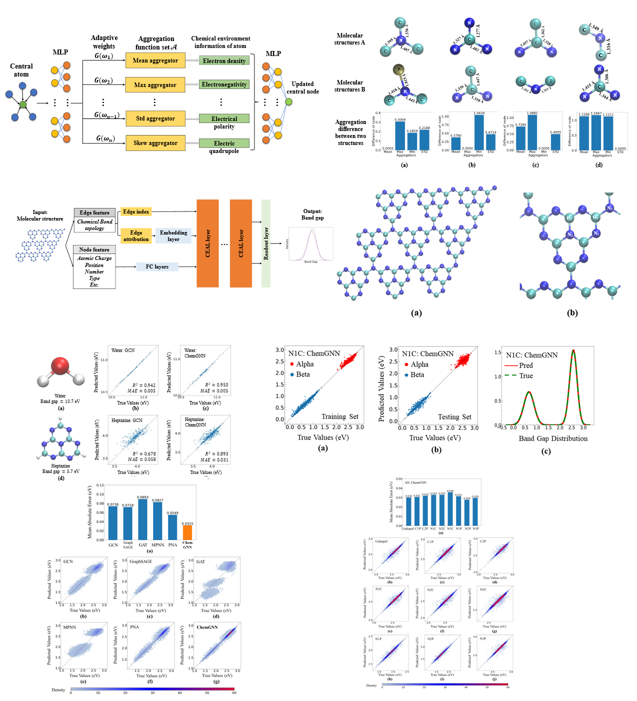
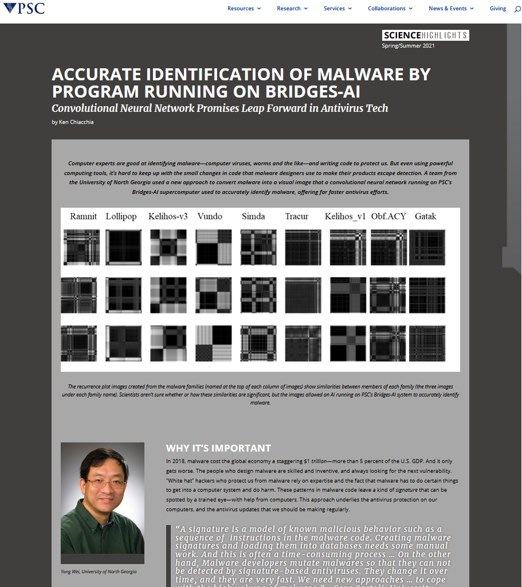
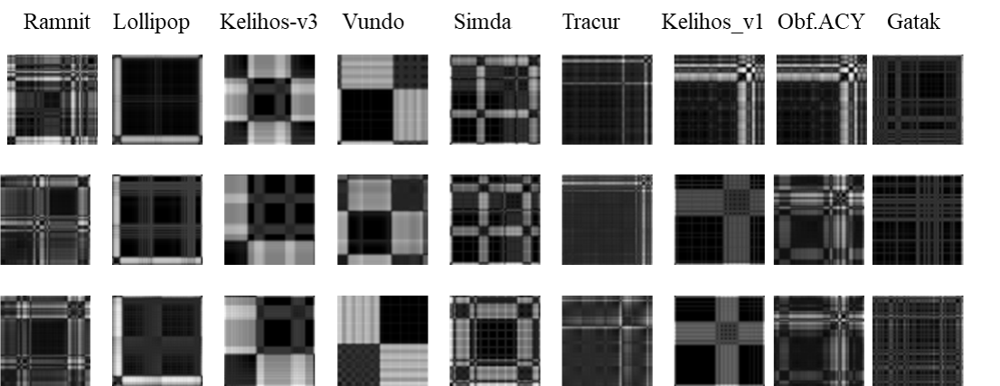

Current Projects
Chemical Environment Adaptive Learning for Optical Band Gap Prediction of Doped Graphitic Carbon Nitride Nanosheets:
Graphitic carbon nitride (g-C3N4) and its doped variants have sparked significant interest for their potential as optical materials.
Accurate prediction of their band gaps is crucial for practical applications, however, it is extremely challenging and computationally expensive to explore all
possible doped molecular structures using traditional quantum simulation methods. In this study, we leverage the recent success of graph neural networks (GNNs)
and developed a novel Chemical Graph Neural Network (ChemGNN) with adaptive learning for material property prediction. The proposed ChemGNN can satisfactorily
capture the characteristics of atoms' local chemical environment and greatly enhance the learning ability of complex molecular structures. Our benchmark results
demonstrate a more than 100% improvement in band gap prediction accuracy over existing GNNs on g-C3N4 and its doped variant. Moreover, the proposed model's
learning power is promising, and it can be potentially applied to predicting other structure-dependent molecular properties, such as nuclear magnetic resonance
chemical shifts. Overall, the ChemGNN model offers a promising approach to enhance predictions of molecular properties, which could have broad applications
in various fields, including material science, drug discovery, and computational chemistry. Submitted to Nature Communications.
Preprint: Chemical Environment Adaptive Learning for
Optical Band Gap Prediction of Doped Graphitic Carbon Nitride Nanosheets
Study the molecular mechanism of SARS-CoV-2 spike protein binding to human cell receptor ACE2:
Allosteric regulation is common in protein-protein interactions and is thus promising in drug design. Nevertheless, the mechanism of
allosteric regulation remains elusive for most proteins, including SARS-CoV-2 spike protein, despite extensive experimental endeavors
over the past years. In the present computational study, the route of allosteric regulation of SARS-CoV-2 spike protein is examined by
all-atom explicit solvent molecular dynamics simulations in conjunction with contrastive machine learning. It was found that peptide
binding to the polybasic cleavage sites, especially the one at the first monomer of the trimeric spike protein, activates the fluctuation
of the spike protein’s backbone. This fluctuation eventually propagates to the nitrogen-terminal domain and its neighboring receptor-binding
domain, remarkably weakening the latter’s binding affinity to the human cell receptor ACE2. Our study justifies the presence of allosteric
regulation in SARS-CoV-2 spike protein, paving the way for the rational design of allosteric antibody inhibitors.
Preprint: Allosteric Regulation of
SARS-CoV-2 Spike Protein Revealed by Contrastive Machine Learning
Protein Folding Path Study using Self-supervised Learning: One of my ongoing projects is to use deep learning models to study the protein molecule structure evolution during the adsorption process on interfaces. In our preliminary investigation published in the Journal of Chemical Theory and Computation, a computational efficient discontinuous molecular dynamics (DMD) simulation combined with the Go-like model is used to study peptide/protein adsorption behavior. The simulated adsorption process can be represented by the adsorption trajectory and the effects of surface to the protein/peptide structure can be represented by the secondary structure and contact map evolution. A contact map is a two-dimensional matrix, in which the value at location (i, j) is the distance between the alpha-carbons in the i-th and j-th amino acid in the chain. Self-supervised deep learning models will be trained to extract a representation of contact map data. The representatio will then be clustered to segment the evolution processes into stages. Each stage represents a phase of the protein molecule structure in the adsorption process.
The preliminary results of protein folding paths obtained by a self-supervised machine learning model are in
the paper "Graph Clustering Analyses of Discontinuous Molecular Dynamics Simulations: Study of Lysozyme Adsorption on a Graphene Surface". The paper is accepted by the ACS
LANGMUIR (h-index: 346, impact factor: 4.331).
Searching for Signs of Lives on Mars: Another recent work of mine applies machine-learning algorithms in the form of convolution neural networks (CNN) to dielectric spectroscopy (DS) measurement data to identify amino acid organic molecules and inorganic salts solutions despite similarities in their spectroscopic responses over a temperature range of 20 to -60oC. Combining DS with machine learning will greatly facilitate more real-time decision-making of mobility systems for future exploratory endeavors in other worlds beyond Earth. The preliminary results have been published in the ACS Journal of Physical Chemistry B
On Going Research Updates
- May, 2023: The manuscript "Graphic Contrastive Learning Analyses of Discontinuous Molecular Dynamics Simulations: Study of Protein Folding upon Adsorption" is accepted by Applied Physics Letters. (impact factor: 3.971).
- April, 2023: An NSF ExpandQISE Collaborative proposal ($0.5 million) has been submitted. Title of the proposal: ExpandQISE: Track 1: Developing Quantum Enhanced Graph Neural Networks for Advanced Materials Discovery. This is a collaboration with Arizona State University. I am the PI of the proposal. We will develop quantum-enhanced graph neural networks (QGNN) that combines classical and quantum computing to facilitate materials discovery.
- April, 2023: I gave an invited talk to the Joint School of Nanoscience and Nanoengineering in Greensboro, North Carolina. Topic: "Supercharging Molecule Design, Protein Folding Path and Allosteric Regulation Studies with Machine Learning".
- March, 2023: I gave an invited talk to the Department of Chemistry at Wake Forest University in Winston-Salem, North Carolina. Topic: "Chemical Environment Adaptive Learning and Self-supervised Learning for Molecule Design, Protein Folding Path and Allosteric Regulation Studies".
- February, 2023: The paper "Chemical Environment Adaptive Learning for Optical Band Gap Prediction of Doped Graphitic Carbon Nitride Nanosheets" has been submitted to Nature Communications (h-index: 410, impact factor: 17.69). A Novel ChemGNN model was proposed. The model uses the adaptive aggregation mechanism to extract deep insight from atoms’ local chemical environment, addressing the limits of using single aggregation. Experimental results show that the proposed model can significantly improve the optical band gap prediction of graphitic carbon nitride nanosheets and the doped variants. Moreover, the proposed model's learning power is promising, and it can be potentially applied to predicting other structure-dependent molecular properties, such as nuclear magnetic resonance chemical shifts. Overall, the ChemGNN model offers a promising approach to enhance predictions of molecular properties, which could have broad applications in various fields, including material science, drug discovery, and computational chemistry.
- August, 2022: The paper "Graph Clustering Analyses of Discontinuous Molecular Dynamics Simulations: Study of Lysozyme Adsorption on a Graphene Surface" is accepted by the ACS LANGMUIR (h-index: 346, impact factor: 4.331). Understanding interfacial behaviors of biomolecules is crucial to applications in biomaterials and nanoparticle-based biosensing technologies. In this work, we utilized self-supervised deep learning to analyze discontinuous molecular dynamics (DMD) simulations of lysozyme adsorption on a graphene surface. The folding stages obtained by the machine learning algorithm were consistent with detailed analyses of protein structure. The combination of self-supervised machine learning analysis and efficient DMD simulations developed in this work could be an important tool to study biomolecules’ interfacial behaviors
- May, 2022: The manuscript "Graph Clustering Analyses of Discontinuous Molecular Dynamics Simulations: Study of Lysozyme Adsorption on a Graphene Surface" is submitted to the ACS LANGMUIR (h-index: 346, impact factor: 4.331).
- April, 2022: An NSF RUI Collaborative proposal ($0.5 million) has been submitted. Title of the proposal: Development of Novel Machine Learning-Based Rapid Metabolomic and Biological Process Identification. This is a collaboration among High Point University, NASA JPL and Howard University. I am the lead PI of the proposal. We are going to establish a Raman and Dielectric spectroscopy (DS) database of metabolites. Deep learning models and the database will be utilized to detect/identify bio-analytes/metabolites in the biological and metabolomic processes under extreme temperature conditions.
- December, 2021: I gave an invited talk to the Naval Research Lab in Washington D.C. on Applications of Convolutional Neural Networks in Malware Identification and Exobiology.
- April, 2021: Our research project on malware classification using deep learning models has been given media highlight at the Pittsburgh Supercomputing Center (PSC) of the NSF-supported Extreme Science and Engineering Discovery Environment (XSEDE).
- November, 2020: Paper "Machine Learning Analysis of the Thermodynamic Responses of In-situ Dielectric Spectroscopy Data in Amino Acids and Inorganic Electrolytes" is accepted by the ACS Journal of Physical Chemistry B(h-index: 378, impact factor: 2.857). Dielectric spectroscopy (DS) is a robust electrochemical technique for biochemical, geobiological and geochemical applications. Variations in the magnitude of the fraction of constituents can be an indication of changes in chemical and biological processes. Thus, it is possible to detect and identify chemicals in the biochemical, geochemical and geobiological processes provided the magnitudes of fractions of constituents of the DS data can be estimated. However, estimating such fractions of constituents in DS measurement of chemical mixtures is challenging, and usually inaccurate as well as time-consuming. Many factors (in addition to electrical noises) can impact accuracy in DS measurement, including the effects of electrode polarization, and electrode chem physical processes associated with chemical or mechanical degradation. Noisy data impact the estimation of fractions of constituents. All these result in poor chemical detection and identification precision. Complex problems such as this require innovative solutions. Machine learning (ML) is a computational approach that can learn the inherent deep characteristics from measurement data to map the inputs to outputs without being explicitly programmed. ML is well suited for complex problems such as detecting and identifying chemicals using DS measurement, even if the measurements are noisy. A convolutional neural network (CNN) with channel-wise one-dimensional filters is proposed to fulfill the task, using the DS data of amino acid and inorganic salt solutions. Experimental results show that the CNN with two convolutional layers and one fully connected layer can effectively differentiate solutions containing amino acids from those containing salts in both the liquid and solid (water ice) states. To complement the experimental measurements and CNN analysis, the diffusive behaviors of ions (K+, Cl- and OH-) were further studied with atomistic molecular dynamics (MD) simulations performed in this work as well as the quantum simulation published in the literature. Combining DS with machine-learning techniques and simulations will greatly facilitate more real-time decision-making of mobility systems for future exploratory endeavors in other worlds beyond Earth. This work is a collaboration with NASA JPL and Howard University.
- October, 2020: The paper "Protein Corona on Gold Nanoparticles Studied with Coarse-Grained Simulations" is accepted by the ACS LANGMUIR (h-index: 319, impact factor: 3.683). Understanding protein corona formation in an aqueous environment at the molecular and atomistic levels is critical to applications such as biomolecule-detection and drug delivery. In this work, we employed mesoscopic coarse-grained molecular dynamics (MD) simulations to study ovispirin-1 and lysozyme protein coronas on bare gold nanoparticles.
- October, 2020: The paper "Machine Learning Analysis of the Thermodynamic Responses of In-situ Dielectric Spectroscopy Data in Amino Acids and Inorganic Electrolyte" has been submitted to the ACS Journal of Physical Chemistry B(h-index: 378, impact factor: 2.857).
- September, 2020: The paper "Malware Classification using Recurrence Plots and Deep Neural Network" is accepted by the 2020 IEEE International Conference on Machine Learning and Applications ( ICMLA 2020). In this work, we apply a novel technique used in dynamic and chaotic systems to represent the stochastic behavior of binary malware codes. Deep learning algorithms are then utilized to identify the categories of malware files.
- September, 2020: The NSF Extreme Science and Engineering Discovery Environment (XSEDE) awarded us a research allocation on the Pittsburgh Supercomputing Center (PSC)'s Bridges-AI GPU server. The allocation of high-end computational resources, visualization, and storage by the XSEDE is done via a competitive process, designed in a similar fashion to the NSF peer-review system.
- August, 2020: Paper "Protein Corona on Gold Nanoparticles Studied with Coarse-Grained Simulations" has been submitted to the ACS LANGMUIR (impact factor: 3.683).
- July, 2020: Paper "Malware Classification using Recurrence Plots and Deep Neural Network" has been submitted to the 2020 IEEE International Conference on Machine Learning and Applications (ICMLA 2020).
- July, 2020: A research allocation proposal has been submitted to XSEDE.


